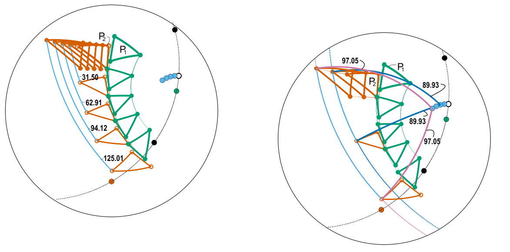

Research
Below is a smattering of research areas I have worked in or am currently working in.
Analyzing stress and strain fields
AI-generated1 audio summary:
The spherical shape of the Earth curves straight orientations on the Earth’s surface. Thus, a statistical analysis of large tectonic fields, such as stress and strain, is challenging as long as there is no reference system. In this project, I analyse these fields with respect to the first-order source, plate boundary forces.

Since these forces are at an angular relationship to the plate motion between two plate, the pole of rotation serves as an new reference system. Plate motion parameters are easy to determine and the new reference system also allows for testing and predicting stress fields. This is in particular useful in areas where stress and strain data are not available. And the method can be applied for paleo-stress fields, too.
My work in usable statistical tools for stress/strain orientations is nascent, but follows from my existing work in improving statistical communication in the fields of structural geology and plate motion reconstruction. For more information on that work, see the publications below:

Plate motion

Every motion on the earth surface can be described as a rotation around an axis piercing through the Earth’s center. Thus, also plate motion is mathematically described as the rotation of spherical polygons around rotational axes (so called Euler poles or Poles of Rotation). In this project, we use the quaternion formulation of rotations to see what happens to the three axes in a three plate scenario when we change our reference system (usually one plate). Spoiler: Two rotational axis stay fixed while the third one is constantly changing its location and rotation speed. This does not only challenge our way of reconstructing past and current plate motion, it does also has physical consequences on the deformation of plates.
Reconstructing plate motion

Reconstructing of plate motion becomes a challenge for the geologic past from which no oceanic crust is preserved. Constraints from the spherical pattern of continental deformation and paleogeography….

reconstruction of relative plate motion. Focus on the supercontinental cycle from Pannotia (540 Ma) to Pangea (250 Ma).


Tectonic deformation, fluid flow, and mineral deposits
Etiam quis tortor luctus, pellentesque ante a, finibus dolor. Phasellus in nibh et magna pulvinar malesuada. Ut nisl ex, sagittis at sollicitudin et, sollicitudin id nunc. In id porta urna. Proin porta dolor dolor, vel dapibus nisi lacinia in. Pellentesque ante mauris, ornare non euismod a, fermentum ut sapien. Proin sed vehicula enim. Aliquam tortor odio, vestibulum vitae odio in, tempor molestie justo. Praesent maximus lacus nec leo maximus blandit.
Tectonic basin and provenance analysis
Nunc ac dignissim magna. Vestibulum vitae egestas elit. Proin feugiat leo quis ante condimentum, eu ornare mauris feugiat. Pellentesque habitant morbi tristique senectus et netus et malesuada fames ac turpis egestas. Mauris cursus laoreet ex, dignissim bibendum est posuere iaculis. Suspendisse et maximus elit. In fringilla gravida ornare. Aenean id lectus pulvinar, sagittis felis nec, rutrum risus. Nam vel neque eu arcu blandit fringilla et in quam. Aliquam luctus est sit amet vestibulum eleifend. Phasellus elementum sagittis molestie. Proin tempor lorem arcu, at condimentum purus volutpat eu. Fusce et pellentesque ligula. Pellentesque id tellus at erat luctus fringilla. Suspendisse potenti.
Footnotes
generated using Google NotebookLM↩︎